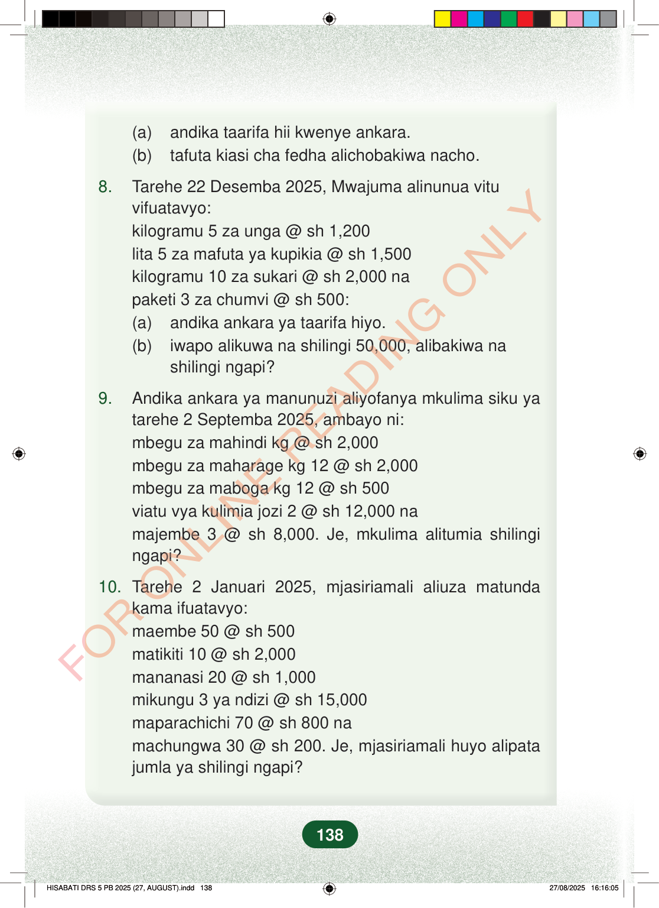

(a)andika taarifa hii kwenye ankara.(b)tafuta kiasi cha fedha alichobakiwa nacho.8.Tarehe 22 Desemba 2025, Mwajuma alinunua vituvifuatavyo:kilogramu 5 za unga @ sh 1,200lita 5 za mafuta ya kupikia @ sh 1,500kilogramu 10 za sukari @ sh 2,000 napaketi 3 za chumvi @ sh 500:(a)andika ankara ya taarifa hiyo.(b)iwapo alikuwa na shilingi 50,000, alibakiwa nashilingi ngapi?9.Andika ankara ya manunuzi aliyofanya mkulima siku yatarehe 2 Septemba 2025, ambayo ni:mbegu za mahindi kg @ sh 2,000mbegu za maharage kg 12 @ sh 2,000mbegu za maboga kg 12 @ sh 500viatu vya kulimia jozi 2 @ sh 12,000 namajembe 3 @ sh 8,000. Je, mkulima alitumia shilingingapi?10.Tarehe 2 Januari 2025, mjasiriamali aliuza matundakama ifuatavyo:maembe 50 @ sh 500matikiti 10 @ sh 2,000mananasi 20 @ sh 1,000mikungu 3 ya ndizi @ sh 15,000maparachichi 70 @ sh 800 namachungwa 30 @ sh 200. Je, mjasiriamali huyo alipatajumla ya shilingi ngapi?138
(a) andika taarifa hii kwenye ankara. (b) tafuta kiasi cha fedha alichobakiwa nacho.
8. Tarehe 22 Desemba 2025, Mwajuma alinunua vitu vifuatavyo: kilogramu 5 za unga @ sh 1,200 lita 5 za mafuta ya kupikia @ sh 1,500 kilogramu 10 za sukari @ sh 2,000 na paketi 3 za chumvi @ sh 500: (a) andika ankara ya taarifa hiyo. (b) iwapo alikuwa na shilingi 50,000, alibakiwa na shilingi ngapi?
9. Andika ankara ya manunuzi aliyofanya mkulima siku ya tarehe 2 Septemba 2025, ambayo ni: mbegu za mahindi kg @ sh 2,000 mbegu za maharage kg 12 @ sh 2,000 mbegu za maboga kg 12 @ sh 500 viatu vya kulimia jozi 2 @ sh 12,000 na majembe 3 @ sh 8,000. Je, mkulima alitumia shilingi ngapi?
10. Tarehe 2 Januari 2025, mjasiriamali aliuza matunda kama ifuatavyo: maembe 50 @ sh 500 matikiti 10 @ sh 2,000 mananasi 20 @ sh 1,000 mikungu 3 ya ndizi @ sh 15,000 maparachichi 70 @ sh 800 na machungwa 30 @ sh 200. Je, mjasiriamali huyo alipata jumla ya shilingi ngapi?
138
(a) andika taarifa hii kwenye ankara.(b) tafuta kiasi cha fedha alichobakiwa nacho.8.Tarehe 22 Desemba 2025, Mwajuma alinunua vitu vifuatavyo:kilogramu 5 za unga @ sh 1,200lita 5 za mafuta ya kupikia @ sh 1,500kilogramu 10 za sukari @ sh 2,000 napaketi 3 za chumvi @ sh 500:(a) andika ankara ya taarifa hiyo.(b) iwapo alikuwa na shilingi 50,000, alibakiwa na shilingi ngapi?9.Andika ankara ya manunuzi aliyofanya mkulima siku ya tarehe 2 Septemba 2025, ambayo ni:mbegu za mahindi kg @ sh 2,000mbegu za maharage kg 12 @ sh 2,000mbegu za maboga kg 12 @ sh 500viatu vya kulimia jozi 2 @ sh 12,000 namajembe 3 @ sh 8,000.Je, mkulima alitumia shilingi ngapi?10.Tarehe 2 Januari 2025, mjasiriamali aliuza matunda kama ifuatavyo:maembe 50 @ sh 500matikiti 10 @ sh 2,000mananasi 20 @ sh 1,000mikungu 3 ya ndizi @ sh 15,000maparachichi 70 @ sh 800 namachungwa 30 @ sh 200.Je, mjasiriamali huyo alipata jumla ya shilingi ngapi?